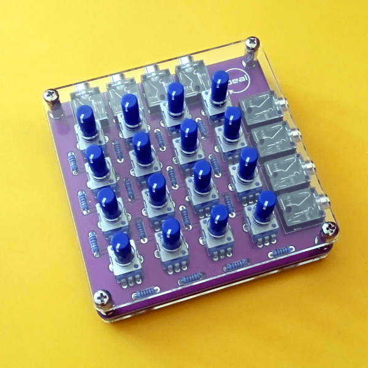
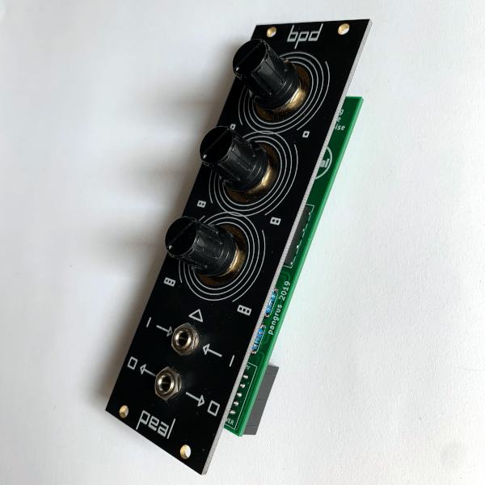

Devices
As a self-taught musician I play with various gear. In 2007 I started to build my
own instruments.
In this page you can find the hardware projects I've developed so far. I make workshops, teaching people how to build and use them.
matrix
matrix is a passive matrix mixer with 4 inputs and 4 outputs.
It routes multiple input signals to multiple outputs, it can be used to distribute signals to different
effect chains and amplification systems or to control the gain of feedback loops when used in no-input
configurations.
All the jacks are 3,5 mm (1/8") mono.
It does not require power supply.
matrix is available on my Tindie store.

Texture
Texture is a device that incorporates three independent sound generators for the production of a wide
variety of sonic environments with a ever changing expressive vitality.
All sound parameters can be modified through direct manipulation of the knobs allowing a direct, fast
and
intuitive performance. The sound generators have complementary tonal characteristic and their circuits
can
be
customized easily, by changing the electronic components values that affect the frequency of the
oscillators
and the cut-off frequency of the passive filters.
The circuit derives directly from Kinetik Laboratories'
Protean, a powerful drone sound generator.
Texture is divided in three sections: Cluster, Ring and Chaos.
Cluster is composed by three frequency controlled oscillators. It allows the creation of eternally
sustained
chords and clusters of microtonal intervals.
In the Ring section the signal from the center oscillator is processed by two pseudo-ring modulation
circuits with the other two oscillators. Adjustments of the oscillator pitches result in evocative and
constantly changing
Textures, bell-like or otherwise metallic sounds.
Chaos is formed by three oscillators in cross-modulation. Its sonic character far exceeds the typical
white and pink noise sources. Tuning the oscillator pitches allows timbral metamorphosis and complex
variations in
tone and sound granularity.
Each section has a level knob to mix the three voices.
The circuit is powered on a 2.1mm barrel jack, center negative, like your favourite pedal effect.
Texture is available on my Tindie
store.

multi
multi is an open hardware circuit board
hosting a powerful Seeeduino XIAO, 6 pots, 2 pushbuttons, 2 Midi DIN connectors and an audio output.
The Seeeduino XIAO board carries the powerful ATSAMD21G18A-MU which is a low-power microcontroller and
has
14 GPIO PINs, a DAC output and one UART interface.
The strong point is that you can program your multi as you need, using the Arduino IDE.
On the MIDI side, possible use includes advanced midi controlling, filtering and remapping as well as
algorithmic arpeggiators and aleatoric patch generators. It's also perfect to explore digital synthesis
techniques.
DIY kits and assembled units are available on my Tindie store.

bebe
bebe is a two oscillators sound generator
with a 5 steps gate sequencer/LFO. Sound generation comes from a 4093 CMOS chip and the sequencer is
implemented on an
ATtiny84 MCU. It's eurorack compatible, the two oscillators have CV/GATE inputs and the sequencer
generate a
clock out (hackable as clock in) and two gate outputs.

bpd
bpd (borderline personality disorder) is a
three cross modulated oscillators voice for eurorack systems. The sound palette of this circuit is wide,
it
can produce
throbbling basses as well as white noise. The circuit was originally implemented for the harsh side of
Dr.Jekyll & Mr.Hide. BPD has also a CV input that influences the timbre and the sound dynamic.

Hidden Sound Explorer
hse (hidden sound
explorer) is a circuit that allows to amplify small voltages coming from piezo-electric
transducers
or from coils. It
allows to scope out the electromagnetic fields produced by power supplies, electric motors,
smartphones...whatever. Any electromagnetic source will produce a distinct sound.

ATtiny multiboard
ATtiny multiboard is a
printed
circuit board hosting an ATtiny85 micro controller unit, two potentiometers, the components to allow
audio
generation
and a led.
The Attiny85 can be programmed by using the Arduino integrated development enviroment.